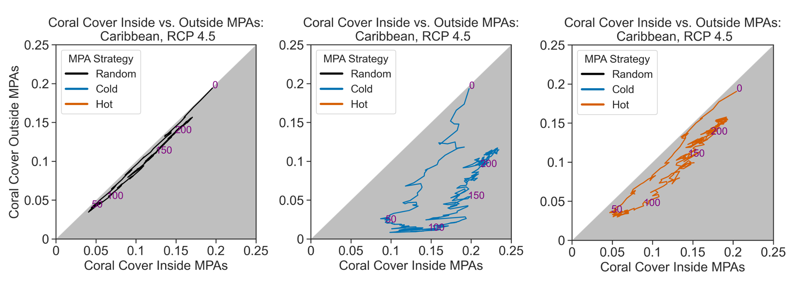

Research
These are some of the projects we are currently working on.

Scientific Machine Learning for Ecosystem Regime Shifts
This project focuses on developing Scientific Machine Learning
(SciML) tools for predicting ecosystem regime shifts. This approach
combines the predictive power of machine learning with scientific
understanding of ecological dynamics to address critical ecosystem-level
challenges. Using Universal Differential Equations, we are advancing
machine learning capabilities for ecological dynamics. We are applying
SciML to forecast regime shifts in tropical coral ecosystems, freshwater
lakes with harmful algal blooms, and mangrove ecosystems. Overall, this
project seeks to improve predictive methods for ecosystem changes,
enhance interpretability for stakeholders, and promote equitable science
by reducing data requirements for predictions in data-poor systems.

Eco-evolutionary dynamics on networks
This research area investigates the interplay between ecological and
evolutionary processes in shaping population responses to climate
change. We focus on disentangling these processes to assess climate
change impacts on connected populations and communities. Using network
theory and theoretical modeling, we simulate the adaptive responses of
populations under rapid environmental change, considering factors such
as demography, selection, and dispersal of heritable traits. Our work
has revealed unexpected findings, such as the potentially negative
impact of gene flow on population persistence in certain network
structures. Current projects extend this approach to Large Marine
Ecosystems, examining how temperature increase rates and spatial
temperature ranges influence community dynamics and species diversity
over time.
Relevant work: McManus et al. (2021) Ecology
Adaptive capacity of coral populations

Our research focuses on quantifying the adaptive capacity of coral
populations in response to climate change, a crucial factor in promoting
ecosystem resilience. Adaptation is a complex process involving both
evolutionary (including gene flow and selection) and ecological
components (including dispersal and competition), which are
interconnected through feedback loops. To address this complexity, we
are applying eco-evolutionary models to real-world scenarios,
specifically studying reef networks in the Caribbean and Indo-Pacific
regions. Our aim is to predict coral adaptation patterns under rising
sea temperatures. Through this work, we seek to disentangle the various
eco-evolutionary processes at play, allowing us to better assess the
impacts of climate change on coral reef metapopulations and
metacommunities.
Relevant work:
Colton et
al. (2022) Nature Ecology and Evolution
McManus et al. (2021)
Global Change Biology
McManus et al. (2020)
Global Change Biology
Spatial management for evolving coral populations

How should we conserve evolving populations at the regional scale?
In this project, we are exploring the efficacy of different spatial
management strategies, including approaches that target “refugia”
(typically cooler sites in the network) and those that target potential
sources of warm-adapted larvae (that are generally more vulnerable to
the effects of climate change).
Indigenous and Contemporary Marine Resource Management in Hawai’i
Our research integrates Indigenous practices with contemporary strategies to manage Hawai’i’s culturally and economically significant marine resources. We focus on two key projects: (1) assessing the ecosystem impacts of Indigenous practices, such as loko i’a (fishponds), on Hawaiian reefs and surrounding areas, and (2) developing social-ecological models to evaluate both Indigenous and modern management approaches. By studying cross-habitat linkages and incorporating historical ecological data, we aim to understand how these practices affect marine communities and overall ecosystem productivity. This research seeks to enhance the sustainability of marine resources and increase community resilience against climate change.
Relevant work:
Innes-Gold
et al. (2024) Ecosphere